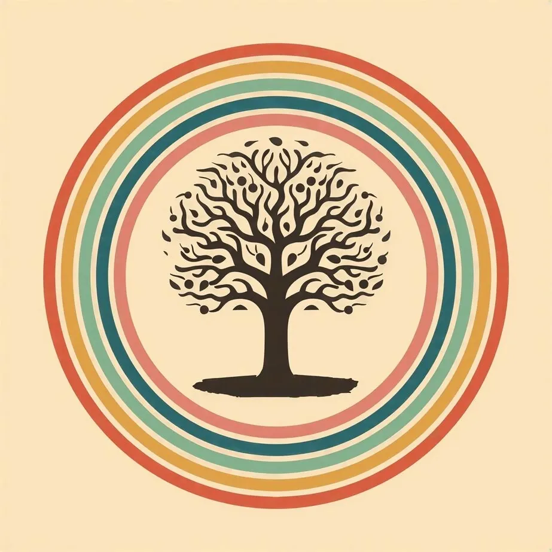
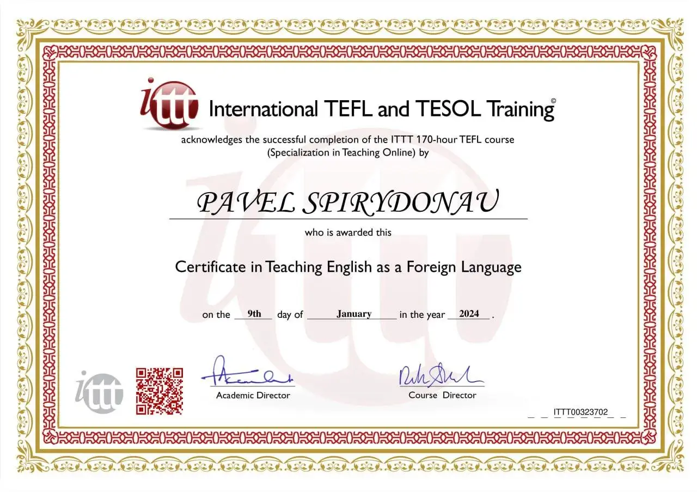
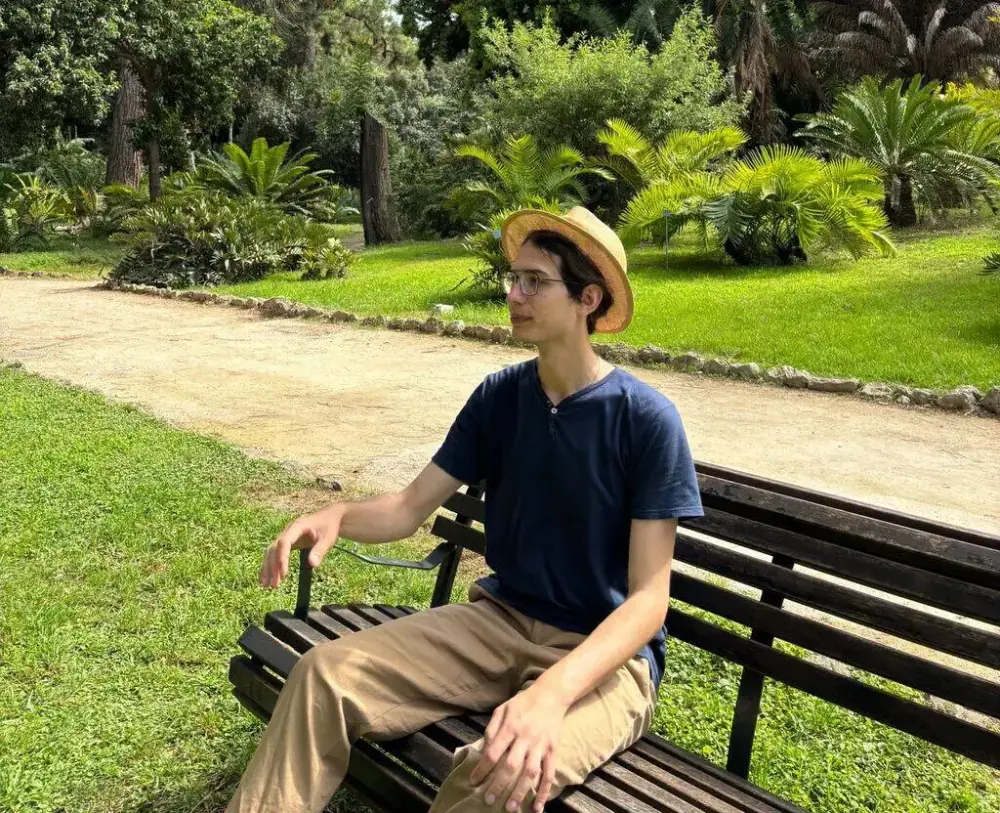
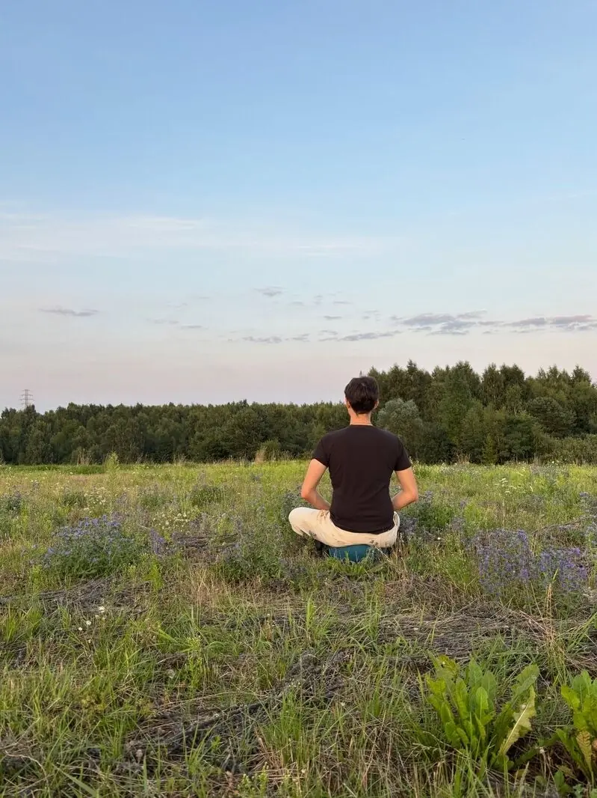
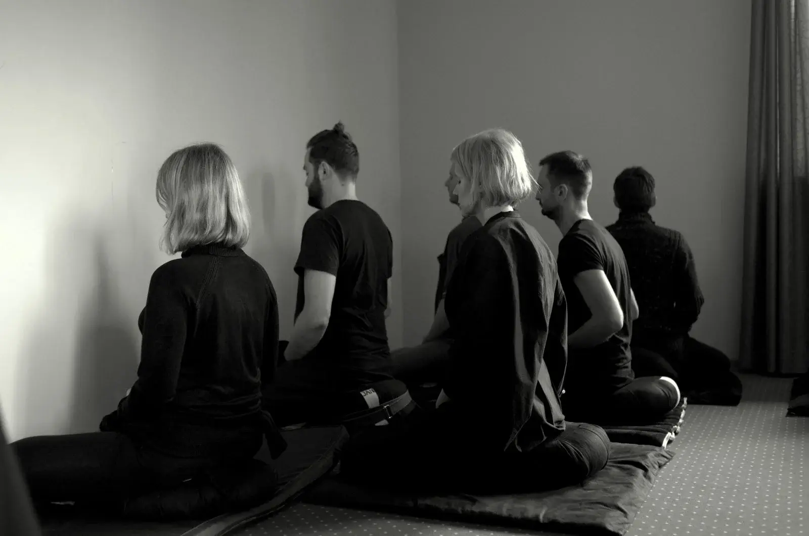

Sit down. Begin.
About the practice
I provide simple sitting meditation instruction online for those wishing to develop attention and work with their mind.
Meditation is not about turning off your thoughts. Practice is about meeting experience exactly as it is.
Attention develops stability and clarity. Meditation is a simple discipline of presence.
Practice is simple.
Sessions
Weekly online meditation
Sessions held via Zoom.
Meditation for beginners
Introduction to shamatha practice.
Individual guidance
Private sessions and practice support.
Upcoming Sessions: Details are sent via email.
Duchowy materializm jest przeszkodą.
Filozofia
Moim głównym źródłem inspiracji jest Chögyam Trungpa Rinpoche, tybetański mistrz medytacji, znany z bezpośredniego i autentycznego podejścia do duchowości.
Jego nauczanie podkreśla, że medytacja nie polega na ucieczce od rzeczywistości, lecz na pełnym spotkaniu z nią — taką, jaka jest. Kluczową rolę odgrywa koncepcja „Podstawowego Dobra” (Basic Goodness), czyli wrodzonej godności i wartości obecnej w każdym człowieku.
Praktyka medytacji nie ma na celu stawania się „lepszym”, lecz rozwijania uważnej obecności i odkrywania tego, kim już jesteśmy.
Chögyam Trungpa Rinpocze
Start where you are.
About
Pavel Bielski — certyfikowany instruktor medytacji, praktykujący od 2023 roku, pracujący w oparciu o tradycje Kwan Um Zen, Shambhali, Diamentowej Drogi oraz buddyzmu indo-tybetańskiego.
Projekt oferuje ustrukturyzowane i przystępne instrukcje medytacji, skierowane do osób początkujących oraz wszystkich zainteresowanych rozwijaniem uważności i stabilności umysłu.
Na co dzień mieszka w Gdańsku i prowadzi sesje medytacyjne online dla międzynarodowej społeczności.
Posiada akredytowany certyfikat Meditation Practitioner / Teacher Certification oraz ukończył program Palouse Mindfulness — oparty na metodzie MBSR (Mindfulness-Based Stress Reduction) stworzonej przez Jon Kabat-Zinn na University of Massachusetts Medical School.

Moje certyfikaty.


"Siedząc cicho, nic nie robiąc, nadchodzi wiosna, a trawa rośnie sama."— Przysłowie Zen
×

Attention can be trained.
Artykuły
Mit Buddy pod Drzewem a Prawda o Urzeczywistnieniu
Twierdza Niezmiennego Umysłu: Dlaczego nie musisz stawać się kimś lepszym

Po prostu usiądź. Zwyczajna instrukcja dla początkujących
Mit zachodu słońca. Dyskomfort jako ścieżka do przebudzenia
Odłóż łamigłówki. Dlaczego nie musisz rozumieć wszystkiego, by po prostu rozkwitnąć
Przeczytaj i przemyśl.
Contact
Ask about the practice and book a free 15-minute introductory call.
Email: pspirydonau@gmail.com
Zoom: Link provided after contact